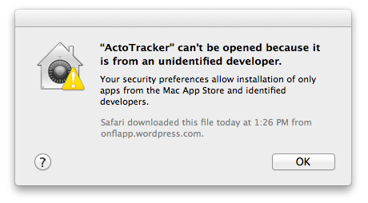

App Cannot Be Opened
If you get a message similar to this one:

…don’t worry :-).
It just means the application did come from source other then the Apple’s App Store, like my site or the MacUpdate for example.
What you have to do to open it anyways is this:
1 in the Finder, locate the app (in the Downloads most likely)
2 Press the Control-key and click the app icon
3 Choose Open from the pop-up menu.
Luckily, this dialog box shows only for the fist time you try to launch the app.
It is a bit annoying but it doesn’t mean there is anything wrong with the app itself. Many 3rd party applications need to be launched this way. More information about the Gatekeeper can be found here: (http://support.apple.com/kb/ht5290)